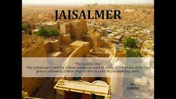
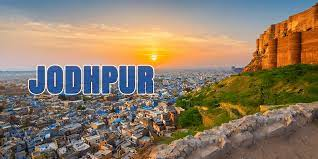
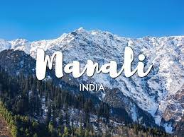
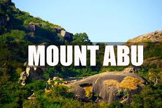

|  | Jaisalmer is a former medieval trading center and a princely state in the western Indian state of Rajasthan, in the heart of the Thar Desert. Known as the "Golden City," it's distinguished by its yellow sandstone architecture. Dominating the skyline is Jaisalmer Fort, a sprawling hilltop citadel buttressed by 99 bastions. Behind its massive walls stand the ornate Maharaja's Palace and intricately carved Jain temples. |
|  | Jodhpur is a city in the Thar Desert of the northwest Indian state of Rajasthan. Its 15th-century Mehrangarh Fort is a former palace that’s now a museum, displaying weapons, paintings and elaborate royal palanquins (sedan chairs). Set on on a rocky outcrop, the fort overlooks the walled city, where many buildings are painted the city’s iconic shade of blue. |
|  | Manali is a high-altitude Himalayan resort town in India’s northern Himachal Pradesh state. It has a reputation as a backpacking center and honeymoon destination. Set on the Beas River, it’s a gateway for skiing in the Solang Valley and trekking in Parvati Valley. It's also a jumping-off point for paragliding, rafting and mountaineering in the Pir Panjal mountains, home to 4,000m-high Rohtang Pass. |
|  | Mount Abu is a hill station in western India’s Rajasthan state, near the Gujarat border. Set on a high rocky plateau in the Aravalli Range and surrounded by forest, it offers a relatively cool climate and views over the arid plains below. In the center of town, Nakki Lake is a popular spot for boating. Close by are the centuries-old Dilwara Temples, ornately carved from white marble and of great spiritual importance. |